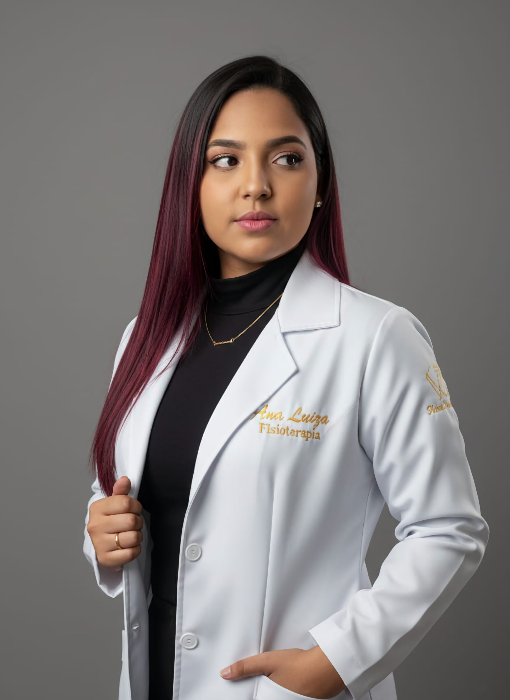

Um espaço pensado para o seu bem-estar
Cuidado, Movimento e Qualidade de Vida em Cada Atendimento
Na AnaFisio, você encontra um ambiente acolhedor, moderno e preparado para oferecer um atendimento personalizado e humanizado. Cada detalhe foi planejado para que você se sinta confortável, segura e confiante durante todo o seu processo de recuperação e cuidado. Com técnicas atualizadas, atendimento individualizado e foco na sua saúde, unimos conhecimento, dedicação e proximidade para ajudar você a aliviar dores, recuperar movimentos e conquistar mais qualidade de vida.

Quem vai cuidar de você?
Ana Luiza
Fisioterapeuta fundadora da AnaFisio, dedica sua atuação à promoção da saúde, prevenção de lesões e recuperação funcional de seus pacientes. Com uma abordagem humanizada e atendimento individualizado, busca oferecer tratamentos baseados em evidências e focados no bem-estar e na qualidade de vida. Especializada em fisioterapia ortopédica, liberação miofascial, agulhamento à seco, ventosaterapia, kinesio taping, laserterapia (ILIB) e terapias para o controle da dor, Ana Luiza trabalha para proporcionar resultados eficazes, sempre respeitando as necessidades e objetivos de cada paciente.
❝Acredito que cada paciente merece um cuidado único. Meu compromisso é identificar a origem da sua dor, promover sua recuperação de forma segura e ajudar você a retomar suas atividades com mais liberdade, confiança e qualidade de vida.❞